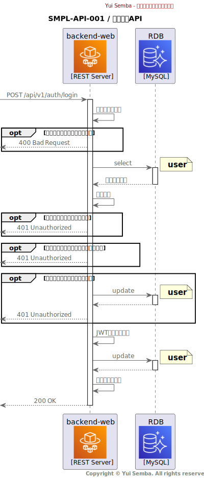

SMPL-API-001 / ログインAPI
機能概要
- ユーザー名とパスワードによる認証するAPI
- 認証に成功した場合はJWTトークンを発行する
- 存在しないユーザー名、またはパスワードが不正な場合はエラーを返す
- アカウントがロックされている場合はエラーを返す
IF 定義
OpenAPI
シーケンス

処理詳細
バリデーション
リクエストパラメータのバリデーションを行う。
ユーザー情報取得処理
認証処理のため、user（ユーザー）テーブルを検索する。
ここで取得したユーザー情報は以降「ユーザー情報」と呼称する。
検索条件
| No |
対象 |
条件 |
| 1 |
user.username |
Request.body.username と完全一致 |
| 2 |
user.deleted_at |
NULL |
ユーザーが存在しない場合、401 Unauthorized を返却する。
エラーレスポンス作成
| No |
対象 |
設定値 |
| 1 |
Response.body.error_code |
invalid_credentials を設定 |
| 2 |
Response.body.error_message |
ユーザー名またはパスワードが正しくありません。 を設定 |
アカウントロックチェック
lock_out_end が現在時刻よりも後の場合（アカウントがロックされている場合）、401 Unauthorized を返却する。
エラーレスポンス作成
| No |
対象 |
設定値 |
| 1 |
Response.body.error_code |
invalid_credentials を設定 |
| 2 |
Response.body.error_message |
ユーザー名またはパスワードが正しくありません。 を設定 |
パスワード検証
パスワードのハッシュ値を検証し、不一致の場合、アクセス失敗回数をインクリメントして 401 Unauthorized を返却する。
パラメータ一覧
| No |
対象 |
設定値 |
| 1 |
access_failed_count |
現在の値に1を加算 |
| 2 |
lock_out_end |
access_failed_count が閾値を超えた場合、現在時刻からロックアウト時間後の時刻を設定 |
エラーレスポンス作成
| No |
対象 |
設定値 |
| 1 |
Response.body.error_code |
invalid_credentials を設定 |
| 2 |
Response.body.error_message |
ユーザー名またはパスワードが正しくありません。 を設定 |
JWT トークン生成
認証に成功した場合、JWTトークンを生成する。
ここで生成したJWTトークンは以降「JWTトークン」と呼称する。
JWTヘッダー設定値
| No |
対象 |
設定値 |
| 1 |
alg |
HS256 |
| 2 |
typ |
JWT |
JWTペイロード設定値
| No |
対象 |
設定値 |
| 1 |
iss |
okiden-backend-web |
| 2 |
sub |
ユーザー情報.user_id |
| 3 |
aud |
okiden-frontend-web |
| 4 |
exp |
現在時刻 + JWT_EXPIRATION_SEC |
| 5 |
nbf |
現在時刻 |
| 6 |
iat |
現在時刻 |
| 7 |
jti |
UUIDv4 |
JWT署名生成
| No |
項目 |
設定値 |
| 1 |
署名キー |
JWT_SECRET_KEY |
ユーザー情報更新
認証に成功した場合、user（ユーザー）テーブルのアクセス失敗回数をリセットする。
パラメータ一覧
| No |
対象 |
設定値 |
| 1 |
access_failed_count |
0 |
| 2 |
lock_out_end |
NULL |
レスポンス作成処理
認証に成功した場合、200 OK を返却する。
| No |
対象 |
処理 |
| 1 |
Response.body.token |
JWT トークン |
Appendix
利用する環境変数一覧
| No |
環境変数名 |
説明 |
デフォルト値 |
| 1 |
JWT_SECRET_KEY |
JWTトークン生成に使用する秘密鍵 |
- |
| 2 |
JWT_EXPIRATION_SEC |
JWTトークンの有効期限（秒） |
3600 |
| 3 |
ACCOUNT_LOCKOUT_THRESHOLD |
アカウントロックの閾値となるアクセス失敗回数 |
5 |
| 4 |
ACCOUNT_LOCKOUT_DURATION_SEC |
アカウントロックの持続時間（秒） |
3600 |
{kind=link}